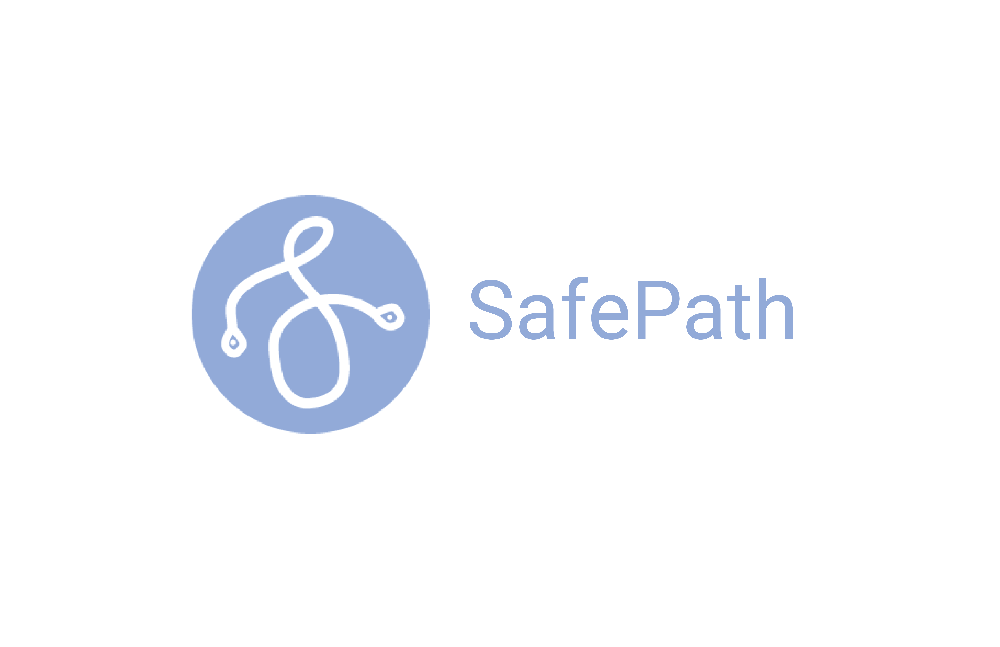

SAFEPATH

Project Overview A navigation prototype as part of the final deliverable for UW Women in Informatics (WINFO)'s 8th Annual Hackathon, with the hackathon theme being Driven By Difference. Through identifying the prevalent street safety issues around campus, our team designed a navigation app prototype with Figma that provides users information regarding route and location safety based on calculated safety scores and verified external news resources, while also allowing users to stay informed in their communities through alerts and reviews.
Team Members Nicholas Chun, Catherine Oei, Ivan Belikov, and Sharon Lin